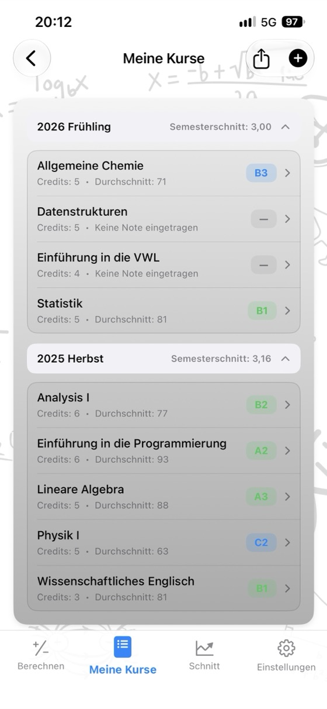
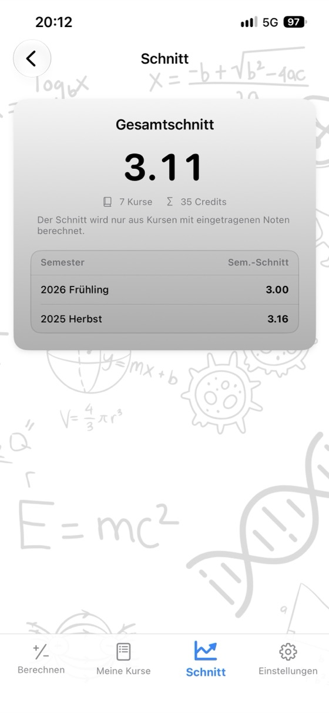
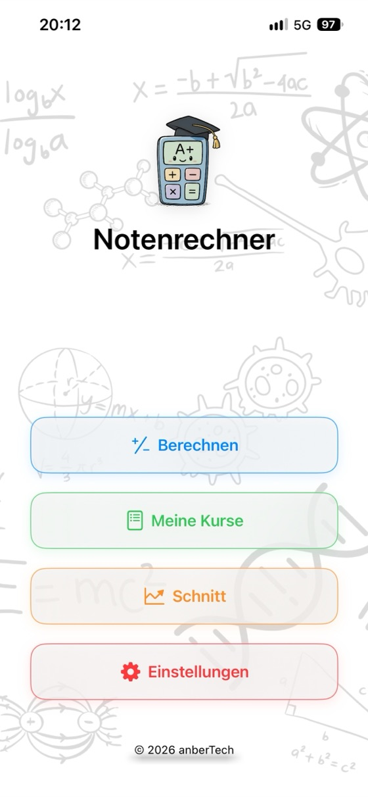
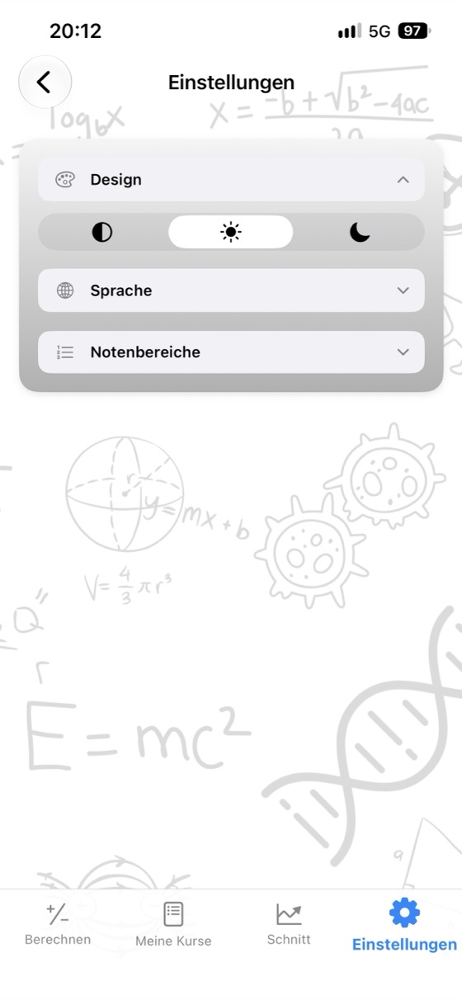
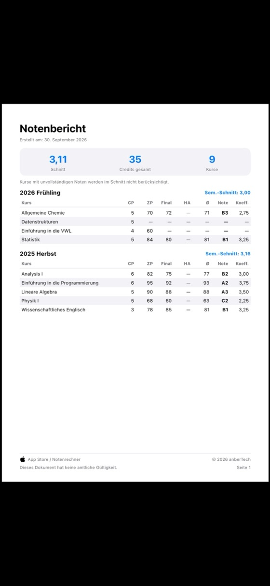

Kenne deine Noten,
plane deine Zukunft.
Kursdurchschnitt, nötige Abschlussnote und dein Schnitt in einer App. Ohne Werbung, ohne Konto, komplett offline.
- ✓ Kostenlos
- ✓ Ohne Werbung
- ✓ Ohne Konto
- ✓ Offline


Jetzt berechnen
Probier den Rechner hier aus, bevor du die App herunterlädst. Ändere die Werte und sieh sofort das neue Ergebnis.
Gewichtung der Abschlussprüfung: 60%
Gewichtung der Abschlussprüfung: 60%
Kostenlose Rechner
Nutze die Rechner direkt im Browser, ohne Download und ohne Anmeldung. Deine eingegebenen Noten bleiben auf deinem Gerät.
Warum Notenrechner?
Kursdurchschnitt
Gib deine Noten aus Zwischenprüfung, Abschlussprüfung und Hausaufgabe mit ihrer Gewichtung ein und sieh sofort deinen Durchschnitt und deine Note.
Nötige Abschlussnote
Sieh auf einen Blick, welches Ergebnis du in der Abschlussprüfung für jede Note mindestens brauchst.
Schnitt im Blick
Speichere deine Kurse nach Semestern. Dein Semesterschnitt und dein Gesamtschnitt werden automatisch aktualisiert.
Deine eigene Notenskala
Passe Notengrenzen und Notenpunkte an die Vorgaben deiner Hochschule an.
Notenbericht als PDF
Teile deine Kurse und deinen Durchschnitt mit einem Tippen als PDF.
17 Sprachen
Englisch, Spanisch, Deutsch, Japanisch, Arabisch, Türkisch und mehr.
Deine Daten bleiben privat
Ohne Konto, ohne Werbung, ohne Tracking. Deine Daten bleiben auf deinem Gerät.
Funktioniert offline
Kein Internet nötig: in der Prüfungswoche, in der Bibliothek, überall.
Ein Blick in die App



Häufige Fragen
Wie berechne ich meinen Kursdurchschnitt?
Multipliziere jede Note mit ihrer Gewichtung und addiere die Ergebnisse. Bei 40% Zwischenprüfung und 60% Abschlussprüfung gilt: Durchschnitt = Zwischenprüfung × 0,40 + Abschlussprüfung × 0,60. Mit 62 in der Zwischenprüfung und 75 in der Abschlussprüfung ergibt das 62 × 0,40 + 75 × 0,60 = 69,8. Gibt es eine Hausaufgabe, rechne deren gewichtete Note dazu. Die Gewichtungen müssen zusammen 100% ergeben.
Welche Note brauche ich in der Abschlussprüfung zum Bestehen?
Nötige Abschlussnote = (Zieldurchschnitt − Zwischenprüfung × Gewichtung der Zwischenprüfung) ÷ Gewichtung der Abschlussprüfung. Bei 55 in der Zwischenprüfung mit 40% Gewichtung und einem nötigen Durchschnitt von 50 gilt: (50 − 22) ÷ 0,60 = 46,7. Du brauchst also mindestens 47 in der Abschlussprüfung. Notenrechner berechnet das für alle Noten auf einmal.
Wie wird der GPA berechnet?
Multipliziere die Notenpunkte jedes Kurses (A = 4,0, B = 3,0 …) mit den jeweiligen Credits, addiere die Ergebnisse und teile sie durch die Gesamtzahl der Credits. Das Ergebnis ist dein Schnitt, auch Grade Point Average oder GPA genannt, auf einer 4,0-Skala.
Gelten überall dieselben Notengrenzen?
Nein. Notengrenzen und Notenpunkte unterscheiden sich je nach Land, Hochschule und sogar Kurs. In der App kannst du die Notenskala genau an deine Vorgaben anpassen.
Was bedeutet Mindestnote in der Abschlussprüfung?
An manchen Hochschulen bestehst du nicht, wenn dein Ergebnis in der Abschlussprüfung unter einer bestimmten Grenze liegt, zum Beispiel 30, 45 oder 50 – auch wenn dein Durchschnitt ausreichen würde. Gib die Mindestnote ein, damit sie bei der Berechnung der nötigen Abschlussnote berücksichtigt wird.
Ist Notenrechner kostenlos?
Ja. Die App ist im App Store kostenlos erhältlich – ohne Werbung, ohne Abo und ohne In-App-Käufe. Auch die Rechner auf dieser Website sind kostenlos.
Wo werden meine Noten gespeichert?
Nur auf deinem eigenen Gerät. Du brauchst kein Konto und es wird nichts an einen Server gesendet. Noten, die du in die Online-Rechner eingibst, bleiben in deinem Browser.
Gibt es eine Android-Version?
Die Android-Version erscheint bald bei Google Play. Aktuell ist die App für iPhone und iPad (ab iOS 17.6) im App Store erhältlich.
Alle deine Kurse an einem Ort
Kostenlos. Ohne Werbung. Ohne Konto.